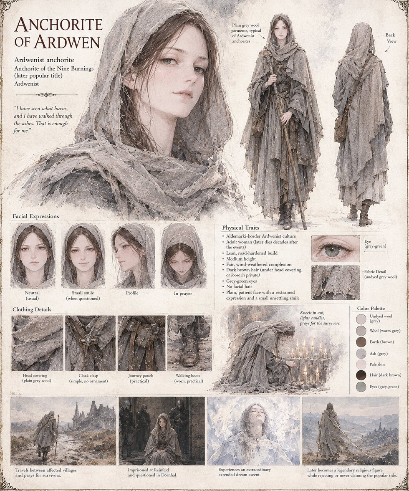

The Anchorite of Ardwen
Ardwenist anchorite of the western border · unnamed · later called the Anchorite of the Nine Burnings, a title she never claims
A woman in undyed grey wool, alone and on foot, who kneels in the ashes of Halstead for the better part of an afternoon without asking a single neighboring farm what happened there, and leaves behind two knee-shaped hollows that the next rain erases. She is present at every one of the nine burnings, and at the one village that is never purged: already in Ansdorf on the ninth day of its dreaming, where a junior Warden interviews her and files the result unread; before Grenmoor's shrine to the Star-Walkers, telling no one which god she thinks the singing was for; in Harkendale's root cellars, warned more than once to move on; at Faldrun, where she blesses a blacksmith's iron globe in Ardwen's name; and at Aschendale's boundary stone, where no purge is ever ordered, praying that night for the elders who chose a hard truth over an easy lie. Taken at Reinfeld on charges of vagrancy and obstruction, she asks the soldier who binds her wrists whether he was at Halstead. In Dornhal she answers every question an Inquisitor puts to her and tells him nothing: asked who sent her, “Ardwen”; asked her name, on the eleventh day, “my name is not the thing you are asking for.” She is not tortured, though not from mercy: three Ardwenist communities have begun writing to Dornhal on her behalf.
In a cell too narrow to lie down in, she kneels toward the one barred slit and asks, not for rescue or vindication, only: if You are beyond the heavens, then let me come. The network above Aldemark does not recognize a prayer; it recognizes an interaction request from an already-registered dreaming subject, and does what it was built to do. She rises past the globe, the furnace of the sun, a wheel of fire and a river of suns so numerous that Aldemark does not amount to a grain of silt in it, to a dormant figure with straight black hair, a white too fine to name and red unblinking eyes, something nearer to a status than a presence: Dormant. No active deployment. Awaiting reassignment. Two names surface that she has sung in the Houses of Vigil since before she could read, the Sky-Answerer and the Unhastening. She asks whether it called her. It does not answer, and she takes the silence as an answer. The manuscript names no other case, but its echoes (a sword's name, a valley watched through one boy's lifetime, those same two titles) point toward Ardwen of Case 0000, and the Custodian log says the designation recurs, under seal, in at least six earlier case files.
On the night of the eleventh selection she reaches for it again and finds nothing, and what she feels instead is the plain gratitude of a beggar let back into a hall; it turns her, for the first time, inward, to the sleeping body in the cell. Within the year Hraban finds her at a crossroads shrine and asks whether she dreamed what the city dreamed; she says, “I dreamed something. It was not the same thing.” Released some months after the collapse, she goes back to the road, hears the stories about her outrun her within two years, every detail they settle on wrong in some particular, and dies decades later still giving the same answer to a question she has been asked several thousand times. The manuscript never gives her a name or an age. The sheet draws her lean and road-hardened, medium height, with dark brown hair under a plain grey head-covering, grey-green eyes, a small unsettling smile, a walking staff, a journey pouch and worn boots.
“Ardwen does not want. Ardwen answers. There is a difference, and it is the only theology I have ever needed.”